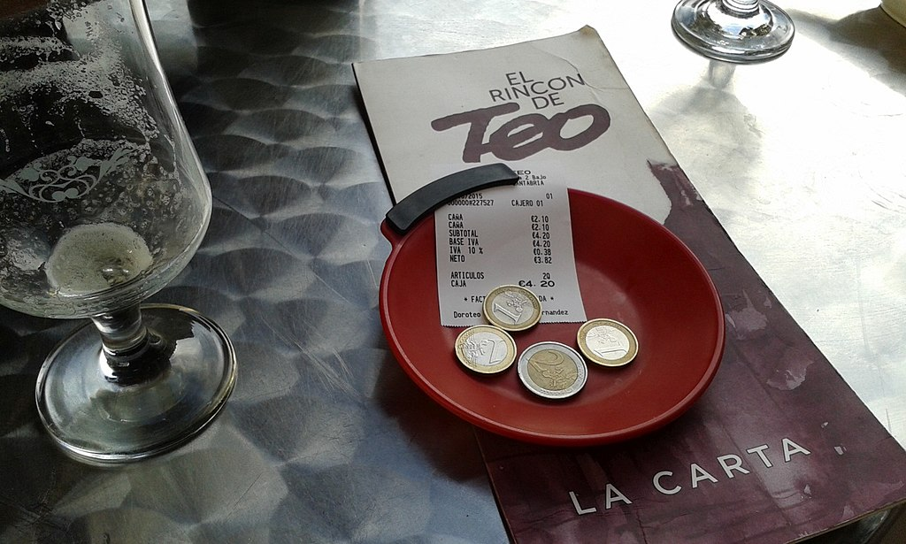
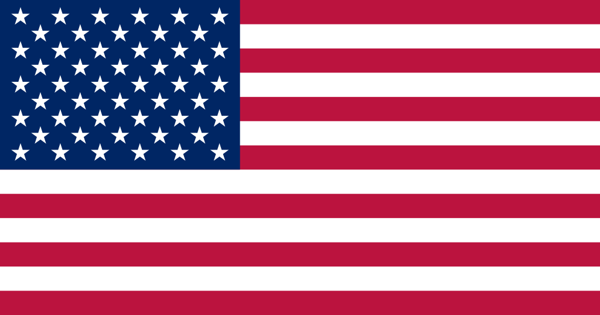
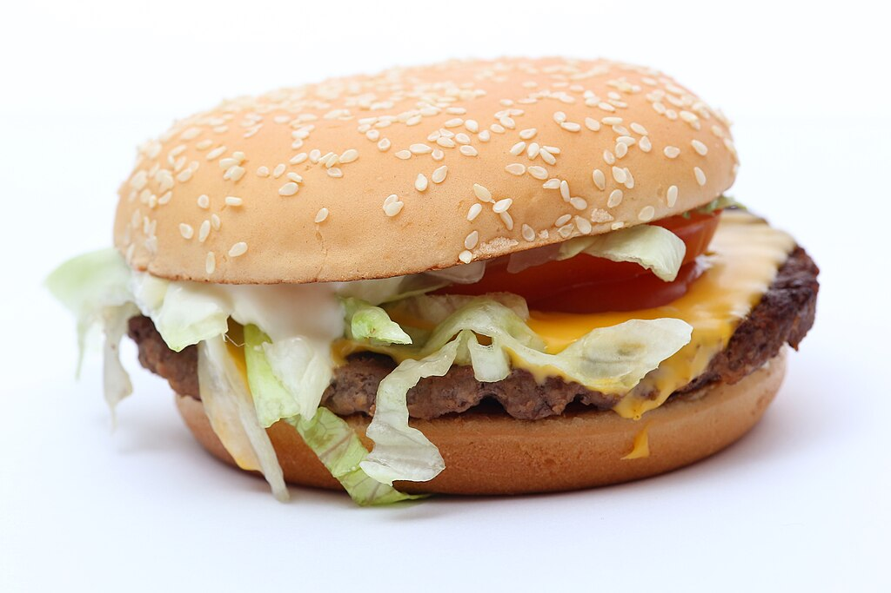

Jungtinės Amerikos Valstijos
Plati ir įvairi šalis, laisvės ir galimybių kraštas, kur kiekvienas regionas turi savitą atmosferą.
Plati ir įvairi šalis, laisvės ir galimybių kraštas, kur kiekvienas regionas turi savitą atmosferą.
Amerikoje viskas yra „supersized“ – net „maža“ gėrimo porcija gali būti tokia, kokios Europoje niekas nesitikėtų. Restoranų patiekalai dažnai tokie dideli, kad iš vienos lėkštės galėtų pavalgyti du žmonės, o greito maisto tinklai nuolat konkuruoja, kas pasiūlys dar įspūdingesnį mėsainį ar desertą. Ir jei galvoji, kad niekas negali suvalgyti tokios porcijos – klysti.
Amerikiečiai dievina ledą gėrimuose – jei užsisakysi vandens restorane, greičiausiai gausi beveik pilną stiklinę ledo su šlakeliu vandens. Net žiemą daugelis mėgsta gaivius gėrimus su didžiuliu kiekiu ledo, o kavos tinklai siūlo daugiau rūšių šaltos kavos nei karštos. Jei esi pratęs prie kambario temperatūros gėrimų, gali būti, kad JAV ilgėsiesi arbatos be ledo...
Kai ateina ruduo, atrodo, kad viskas Amerikoje tampa moliūgine – moliūgų prieskonių kava, moliūgų kvapo žvakės, moliūgų skonio pyragai ir net moliūgų kvapo rankų muilas. „Pumpkin spice“ manija prasideda dar rugsėjį ir užvaldo visą šalį iki pat Padėkos dienos. Net žmonės, kurie sako, kad nekenčia moliūgų skonio, vis tiek nusiperka bent vieną moliūginį gėrimą – juk tradicija!

Coliai, pėdos, svarai, galonai ir mylios – JAV yra viena iš nedaugelio pasaulio šalių, kuri dar nenaudoja metrinės sistemos. Tai reiškia, kad užsieniečiai dažnai pasimeta bandydami suprasti, kiek tiksliai yra „quarter pound burger“ arba kodėl lauke +80 laipsnių (pagal Farenheitą!). Net patys amerikiečiai kartais nesupranta savo matavimo sistemos, bet keisti jos niekas neketina.
Filmuose jos vaizduojamos kaip slapti klubai su keistomis tradicijomis, bet realybėje tai yra rimta dalis amerikietiškos studentų kultūros. Seserijos ir brolijos suteikia studentams socialinių ryšių, rengia vakarėlius ir net padeda karjeros kelyje. Tiesa, įstoti ne visada lengva – yra specialūs priėmimo ritualai ir net savotiškos „krikštynos“, kurios kartais primena filmų scenas.
JAV miestuose viešasis transportas dažnai prastas, o atstumai dideli, todėl be automobilio išsiversti sunku. Net jei parduotuvė yra vos už kelių minučių pėsčiomis, dauguma amerikiečių vis tiek sės į mašiną. Yra net „drive-thru“ (važiuojamosios) vaistinės, bankai ir net bažnyčios! Be automobilio čia jautiesi kaip be rankų.

Amerikiečiai Heloviną švenčia itin triukšmingai – namai papuošti taip, kad atrodo kaip siaubo filmų scenos, vaikai laksto persirengę keisčiausiais kostiumais, o suaugusieji rengia teminius vakarėlius. Be to, tai ir saldainių rojus – „Trick or treat“ tradicija leidžia vaikams surinkti daugiau saldumynų, nei jie suvalgo per metus! Kai kurie kaimynai net organizuoja varžybas, kieno namai atrodo šiurpiausiai.

Tai ne tik futbolo rungtynės, bet ir viena svarbiausių metų dienų Amerikoje. Visi susirenka prie televizorių su užkandžiais, o reklamos per pertraukėles tampa net įdomesnės už patį žaidimą. Dar pridėkite įspūdingą pertraukos šou su garsiausiomis žvaigždėmis – ir turite tikrą amerikietišką šventę. Net tie, kurie nemėgsta sporto, vis tiek žiūri vien dėl atmosferos.
Amerikiečiai garsėja savo atvirumu ir draugiškumu – net su nepažįstamaisiais gali susilaukti plačios šypsenos ir „Hey, how are you?“. Be to, jie dažnai apsikabina sveikindamiesi, o tai kai kuriems europiečiams atrodo kiek per daug asmeniška. Tačiau JAV tai įprasta – kuo daugiau šypsenų ir „small talk“, tuo geriau!
Amerikoje viskas pritaikyta tam, kad būtų patogu – visą parą dirbančios parduotuvės, „drive-thru“ restoranai ir net galimybė internetu užsisakyti bakalėjos prekes su pristatymu tiesiai į automobilį. Amerikiečiai vertina greitį ir patogumą, todėl daugelis paslaugų sukurtos tam, kad žmonės galėtų viską atlikti kuo paprasčiau ir greičiau.
JAV datos rašomos mėnuo-diena-metai formatu, kas dažnai klaidina likusį pasaulį. Pvz., 07/04/2025 reiškia liepos 4-ąją, o ne balandžio 7-ąją. Tai gali sukelti daug painiavos keliautojams ar žmonėms, tvarkantiems dokumentus. Net tarptautinės įmonės dažnai susiduria su situacijomis, kai kažkas užsakoma ar rezervuojama ne tą dieną.
Kainų etiketės parduotuvėse rodo sumą be mokesčių, todėl kasoje gali laukti staigmena. Priklausomai nuo valstijos, gali tekti sumokėti nuo kelių iki keliolikos procentų daugiau nei tikėjaisi. Ir taip, net restoranų čekiuose paliekamas arbatpinigis nėra įtrauktas į kainą, todėl galutinė suma visada būna didesnė nei planavai.
Tai laikotarpis dienos pabaigoje, kai barai siūlo nuolaidas gėrimams – puikus laikas atsipalaiduoti po darbo ir pabendrauti su draugais. Amerikiečiai šią tradiciją labai mėgsta, o kai kurie barai net išplečia „laimingą valandą“ iki kelių valandų! Jei esi JAV ir mėgsti socializuotis – „happy hour“ tikrai taps tavo mėgstamiausia dienos dalimi.
Atminimo diena, minima gegužės paskutinį pirmadienį, pagerbiant žuvusius JAV kariuomenės narius – vyksta paradai ir dedamos gėlės ant kapų.
Nepriklausomybės diena švenčiama liepos 4 d., pažymint JAV nepriklausomybę su fejerverkais ir šventėmis.
Darbo diena minima rugsėjo pirmąjį pirmadienį, pagerbiant darbuotojus ir jų indėlį. Tai yra poilsio diena su iškylomis ir renginiais.
Helovinas, švenčiamas spalio 31 d., kai vaikai persirengia kostiumais ir renka saldainius.
Padėkos diena švenčiama lapkričio ketvirtąjį ketvirtadienį, dėkojant už derlių ir šeimą, tradiciškai valgant kalakutą.
Štai keletas dažnai naudojamų frazių Jungtinėse Amerikos Valstijose! Šios frazės padės nepasimesti pokalbių metu. Tačiau jomis reikia naudotis atsargiai, nes, jei netyčia persistengsi, gali pasirodyti nemandagiai.
Reikšmė: be abejo, žinoma, tikrai.
Panaudojimas: „You bet I'll help you with that project!‟
Tai dažnai naudojama kaip atsakymas į klausimą, patvirtinant kažką arba išreiškiant entuziazmą dėl kažko.
Patarimas! Nenaudok šios frazės pernelyg oficialiose situacijose - ji labiau tinkama kasdieniame pokalbyje.
Reikšmė: perdėta, dramatiška.
Panaudojimas: „He wore a suit to school. So extra!‟
Tai gali būti tiek komplimentas, tiek šiek tiek pašiepiančiai naudojama frazė, priklausomai nuo tono.
Patarimas! Jei nori pagirti, sakyk su entuziazmu. Jei nori pašiepti - gali naudoti su akių vartymu.
Reikšmė: (The Greatest Of All Time) geriausias.
Panaudojimas: „Messi is the GOAT of soccer!‟
Naudojama kalbant apie legendinius sportininkus, atlikėjus ar kitus išskirtinius žmones.
Patarimas! Nepainiok su faktine ožka (goat) - tai visiškai skirtingi dalykai!
Reikšmė: (If You Know, You Know) jei žinai, tai suprasi.
Panaudojimas: „That inside joke... IYKYK.‟
Tai dažnai naudojama socialiniuose tinkluose, norint pabrėžti kažką, ką supras tam tikra žmonių grupė.
Patarimas! Geriausiai tinka pokalbiuose su žmonėmis, kurie jau žino kontekstą.
Reikšmė: „Pasakok paskutines naujienas“
Panaudojimas: „I heard you had a date. Spill the tea!‟
„Tea“ (arbata) šiuo atveju reiškia ne gėrimą, o intriguojančią informaciją.
Patarimas! Naudok tik draugiškose situacijose - ne kiekvienas mėgsta dalintis savo paslaptimis.
Reikšmė: geriausias draugas/-ė.
Panaudojimas: „Love you, bestie!‟
Dažnai naudojama socialiniuose tinkluose ar draugiškuose pokalbiuose.
Patarimas! Jei vadini kažką „bestie“, įsitikink, kad jie irgi tave taip laiko - kitaip gali atrodyti keistai.
Reikšmė: prabangu, rafinuota.
Panaudojimas: „She drinks fancy wine. So boujee!‟
Ši frazė kilo iš „bourgeois“ (buržuazija).
Patarimas! Gali būti sakoma ir su pagarba, ir šiek tiek pašiepiančiai - viskas priklauso nuo tono!
Reikšmė: sėkmės palinkėjimas.
Panaudojimas: „Good luck in your play! Break a leg!‟
Šis posakis kilo iš teatro tradicijų - sakoma, kad tiesiogiai linkėti sėkmės yra blogas ženklas.
Patarimas! Nenaudok sportininkams - jie tikrai nenori susilaužyti kojos!
Reikšmė: bičiulis, pažįstamas.
Panaudojimas: „Hey bro, wanna grab some food?‟
Nors dažniausiai vartojama tarp vaikinų, kai kurios merginos irgi naudoja „bro“ kaip neformalų kreipinį.
Patarimas! Jei kalbi su nepažįstamuoju, gali skambėti per daug familiaru - naudok atsargiai.
Reikšmė: bičas, bičiulis, vyrukas.
Panaudojimas: „Dude, that was awesome!‟
Skirtingai nei „bro“, šį žodį galima naudoti ir kalbant apie situacijas: „Dude, it's so cold today!‟.
Patarimas! Gali būti naudojamas net ir su pykčiu: „Dude, what's your problem?‟.
Reikšmė: „Liaukis mane spaudęs“.
Panaudojimas: „Stop pushing me! Get off my back!“
Tai gana aštri frazė, dažniausiai sakoma susierzinus.
Patarimas! Jei nenori pasirodyti nemandagus, geriau naudok švelnesnę versiją, pvz., „Can you give me a break?“.
Reikšmė: laiko leidimas su draugais.
Panaudojimas: „Wanna hang out later?“
Tai labai dažna frazė jaunimo tarpe, naudojama tiek su draugais, tiek su potencialiais partneriais.
Patarimas! Jei kvieti ką nors, „hang out“ nebūtinai reiškia romantišką susitikimą - tai gali būti tiesiog draugiškas pasiūlymas.
Reikšmė: „I don't know“ (aš nežinau).
Panaudojimas: „- What time does it start? - I dunno.“
Ši frazė labai dažna šnekamojoje kalboje, bet neformali.
Patarimas! Venk jos oficialiuose kontekstuose - vietoj to geriau sakyti pilną „I don't know“.
Reikšmė: kambariokas, buto draugas.
Panaudojimas: „My roomie always eats my food!“
Ši frazė dažniausiai naudojama tarp studentų ar žmonių, gyvenančių kartu.
Patarimas! Tinka tik tada, kai tikrai su kažkuo daliniesi būstu - kitaip gali būti nesuprastas.
Reikšmė: įsižeidęs, susierzinęs dėl menkniekio.
Panaudojimas: „He got salty because he lost the game.“
Tai šiek tiek juokingas būdas apibūdinti kažkieno įžeidžius jausmus.
Patarimas! Jei sakysi tai netinkamai, gali dar labiau supykdyti žmogų - būk atsargus!
Reikšmė: nustebęs, šokiruotas.
Panaudojimas: „I just saw my ex with someone. I'm shook.“
Tai stipri emocinė reakcija, dažnai naudojama internete kaip memų dalis.
Patarimas! Jei nori pridėti dramatiškumo - gali sakyti „I'm so shook right now!“.
Reikšmė: „mano klaida“, „aš kaltas“.
Panaudojimas: „I forgot to text you back. My bad!“
Tai gana lengvabūdiškas atsiprašymas, tinkamas neformalioms situacijoms.
Patarimas! Jei situacija rimta, geriau sakyti „I'm sorry“ - „my bad“ gali atrodyti nepakankamai rimta.
Reikšmė: išprotėti, pakvaišti.
Panaudojimas: „He'll go bananas when you tell him.“
Ši frazė dažniausiai vartojama kalbant apie entuziastingą reakciją.
Patarimas! Jei kalbi apie pyktį, geriau sakyti „go nuts“ arba „lose it“.
Reikšmė: staigiai, greitai užmigti.
Panaudojimas: „I was so tired, I crashed at 10 PM.“
Dažniausiai naudojama kalbant apie miegą.
Patarimas! Jei sakai „I'm gonna crash“, paprastai reiškia „einu miegoti“.
Reikšmė: (You Only Live Once) gyveni tik kartą.
Panaudojimas: „Should I book that trip? YOLO!“
Dažnai naudojama kaip pasiteisinimas rizikingiems ar spontaniškiems veiksmams.
Patarimas! Nors smagu sakyti „YOLO“, geriau neprisidaryti bėdų - ne viskas verta šios frazės.
Reikšmė: „suprantu“, „pagaunu esmę“.
Panaudojimas: „- Math is hard! - Yeah, I get it.“
Kartais naudojama su ironija, kai žmogus iš tikrųjų pavargo nuo aiškinimo.
Patarimas! Jei nori parodyti užuojautą, gali sakyti „I totally get it.“.
Reikšmė: „tas pats ir man“, „aš irgi“.
Panaudojimas: „- I'm so tired today. - Same here.“
Tai greitas ir paprastas būdas parodyti, kad sutinki ar patiri tą patį.
Patarimas! Jei nori būti mandagesnis, gali sakyti „me too“ arba „I feel the same way“.
Reikšmė: apmaudu, nemalonu.
Panaudojimas: „- I forgot my wallet. - Oh, bummer!“
Tai neoficialus būdas išreikšti užuojautą dėl smulkios problemos.
Patarimas! Nenaudok per rimtose situacijose - jei kažkas pasako didelę nelaimę, „bummer“ gali atrodyti per lengvabūdiškai.
Reikšmė: „puikiai praleisti laiką“.
Panaudojimas: „You'll have a blast during your vacation!“
Žodis „blast“ čia reiškia sprogimą - tai pabrėžia stiprų džiaugsmą ar linksmumą.
Patarimas! Puikiai tinka kaip linkėjimas prieš renginius, keliones ar vakarėlius.
Reikšmė: susimauti, padaryti klaidą.
Panaudojimas: „I totally screwed up my exam.“
Tai neformali frazė, dažnai vartojama kalbant apie klaidas.
Patarimas! Jei kalbi oficialioje aplinkoje, geriau sakyti „I made a mistake“, nes „screw up“ gali skambėti per daug šnekamiškai.


Štai keletas dalykų, kurių niekada nederėtumėte daryti, jei norite susilieti ir išvengti nepatogių situacijų. Vadovaukitės šiais patarimais, kad padarytumėte puikų įspūdį!
| Negalima: | Kodėl? | Ką daryti vietoj to: | |
|---|---|---|---|
| Vėluoti | Amerikiečiai vertina punktualumą, ypač verslo susitikimuose ir rezervacijose. | Atvyk laiku arba net šiek tiek anksčiau. | |
| Neatsargiai vartoti amerikietiškus žargonus | Kai kurie žodžiai turi kelias reikšmes ir gali būti suprasti neteisingai. | Prieš naudodamas tam tikrus posakius, pasidomėk jų reikšme. | |
| Neatidėti arbatpinigių | JAV arbatpinigiai yra įprasta ir dažnai būtina padavėjų bei kitų aptarnaujančių darbuotojų pajamų dalis. | Palik 15-20% arbatpinigių. |  |
| Kalbėti apie politiką | Politika yra jautri tema, kuri gali sukelti stiprių reakcijų. | Jei nesate tikras dėl aplinkos, venkite politinių diskusijų. | |
| Būti per daug oficialiam | Amerikiečiai dažnai yra neformalūs net ir profesinėje aplinkoje. | Būk draugiškas ir šiek tiek atsipalaidavęs, nebūk per daug formaliai oficialus. | |
| Kritikuoti patriotizmą | Amerikiečiai dažnai didžiuojasi savo šalimi, todėl kritika gali būti blogai priimta. | Gerbk jų patriotinius jausmus, net jei tavo požiūris skiriasi. |  |
| Žeminti greito maisto kultūros | Greitas maistas yra didelė JAV kultūros dalis, ir daugelis žmonių jį mėgsta. | Jei tau nepatinka, tiesiog nesakyk nieko neigiamo apie jį. |  |